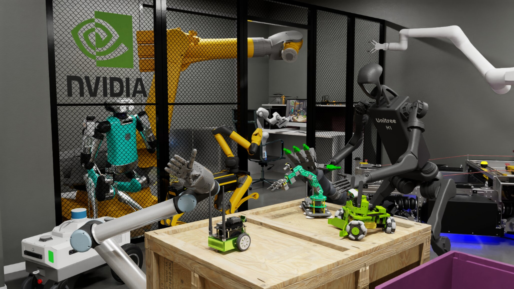

2026. 10. 15
GitHub Pages
GitHub Pages로 나만의 깔끔한 블로그 쉽게 만드는 법
외부 테마 의존성을 지우고 처음부터 커스텀하여 빠른 로딩 속도와 자유도를 확보하는 과정을 공유합니다.
더 읽기

웹 인터페이스 개발과 사용자 경험 향상에 관심이 많습니다. 복잡한 문제를 가독성 높은 코드로 바꾸는 것을 즐기며, 새로운 기술을 빠르게 습득하여 프로젝트에 적용합니다.
GitHub Pages를 이용한 효율적인 문서화 및 깔끔한 코드베이스 관리를 지향합니다.
개발하며 배우고 기록한 생각과 기술 블로그 포스트입니다.